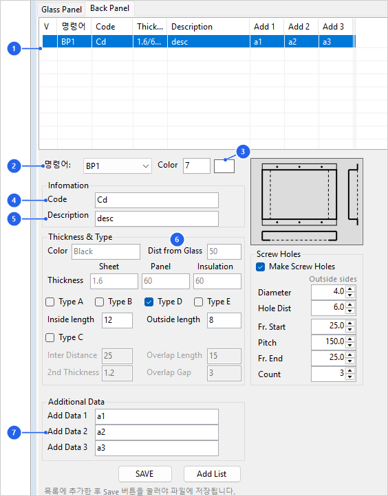

BpOpt
백패널 타입 옵션 패널(BackPanel Type Option Panel)을 열거나 닫습니다.
패널에서 설정한 타입 정보는 BP1 ~ BP9 모델링, 번호 부여, 리스트, 제작 도면 작성에 사용됩니다.
백패널 타입(두께·이격거리·절곡 타입 등)을 미리 정의·수정하는 옵션 패널을 열 때 사용합니다. 여기서 설정한 타입 1~9가 BP1~BP5 모델링과 번호·리스트·제작 도면의 기준이 되므로, 백패널 작업 전에 타입을 정리하는 용도입니다.

| No | 항목 | 설명 |
|---|---|---|
| 1 | 백패널 타입 목록 | 등록된 백패널 타입을 표 형태로 표시합니다. 항목을 선택하면 하단 입력 값이 해당 타입 값으로 채워집니다. |
| 2 | Command | 실제 모델링에서 사용할 BackPanel 명령어를 지정합니다. 일반적으로 BP1 ~ BP9 타입 명령과 연결됩니다. |
| 3 | Color | 백패널 모델이 생성될 레이어 색상을 지정합니다. |
| 4 | Code | 각 백패널 타입에 적용할 코드를 입력합니다. 리스트, 테이블, 도면 표기에서 타입 식별 정보로 사용됩니다. |
| 5 | Description | 백패널 사양에 대한 설명을 입력합니다. 제작 리스트와 도면 주기에서 사람이 읽는 사양 정보로 사용됩니다. |
| 6 | Dist from Glass | 외부 유리 표면을 기준으로 백패널이 떨어지는 거리를 입력합니다. 모델링 시 유리 기준면에서 백패널 위치를 잡는 데 사용됩니다. |
| 7 | Add 1 / Add 2 / Add 3 | 위치, 순서, 프로젝트별 분류 등 사용자 정의 부가 정보를 입력합니다. |
| 항목 | 설명 |
|---|---|
| Sheet Thk. | BackPanel sheet 두께를 입력합니다. |
| Panel Thk. | BackPanel 외부 sheet의 두께 또는 절곡 형상 기준 두께를 입력합니다. Type B All Outside가 아닌 경우 Flange 길이는 Insulation 두께와 같아야 합니다. |
| Insulation Thk. | 백패널 내부 단열재 두께를 입력합니다. |
| Type A · B · D · E | 판 한 장을 접어 만드는 종류입니다. 넷 가운데 하나를 고릅니다. Type A — 네 변을 모두 안쪽(Inside)으로 되접습니다. Type B — 네 변을 모두 바깥쪽(Outside)으로 되접습니다. Type D — 위 · 아래 변은 바깥쪽으로, 왼쪽 · 오른쪽 변은 안쪽으로 되접습니다. Type E — 위 · 아래 변은 안쪽으로, 왼쪽 · 오른쪽 변은 바깥쪽으로 되접습니다. |
| Inside length / Outside length | 안쪽 · 바깥쪽으로 되접는 길이입니다. Type A 는 Inside length, Type B 는 Outside length, Type D · E 는 두 칸을 모두 씁니다. 기본값은 Inside 15, Outside 10 입니다. |
| Type C | 판 두 장으로 만드는 종류입니다. 첫째 판은 유리 쪽에서 뒤로, 둘째 판은 뒷면에서 앞으로 접어 두 판의 날이 겹칩니다. Inter Distance — 첫째 판을 접는 깊이입니다. Overlap Length — 두 판의 날이 겹치는 길이입니다. 2nd Thickness — 둘째 판의 두께입니다. Overlap Gap — 겹친 두 날 사이의 틈입니다. 비워 두면 3 입니다. |
| Screw Holes | Make Screw Holes 를 켜면 Type B · D · E 의 바깥쪽 날개에 스크류 구멍을 냅니다(Type A · C 에는 내지 않습니다). Diameter — 구멍의 지름입니다. Hole Dist — 접는 선에서 구멍 중심까지의 거리입니다. Fr. Start · Pitch · Fr. End · Count — 변을 따라 구멍을 놓는 값이고, 판재( Sht)의 구멍과 같은 규칙입니다. Pitch 만 넣고 Count 를 0 으로 두면 양 끝의 여유 사이를 Pitch 를 넘지 않게 고르게 나눕니다.구멍은 BpFd 의 전개도에도 그려집니다. 날개가 따내진 자리에 놓이는 구멍은 뚫지 않고 뚫은 개수를 알립니다. |
| Type 그림 | 오른쪽의 그림은 고른 종류와 구멍의 켬 · 끔에 따라 바뀝니다. 가운데가 정면, 아래가 좌우 변의 단면, 오른쪽이 상하 변의 단면입니다. 안쪽으로 접는 변은 정면에 점선으로, 바깥쪽으로 접는 변은 정면 바깥의 날개로 보입니다. |
| 작업 | 설명 |
|---|---|
| Add List | 현재 입력 값을 백패널 타입 목록에 추가합니다. 중복된 이름이 있으면 덮어쓰기 확인이 표시될 수 있습니다. |
| Save | 현재 타입 목록을 RCWFolder 폴더의 BackPanelType_Data.dat 파일에 기록합니다. 나중에 같은 설정을 사용하려면 Save로 파일에 저장해야 합니다. |
| 목록에서 지우기 | 목록에서 줄을 고르고 키보드 Del 키를 누르면 지워집니다(여러 줄을 골라 한 번에 지울 수 있습니다). 파일에는 Save 를 눌러야 반영됩니다. |
| 모델링 적용 | BP1 ~ BP9 명령은 이 패널에 저장된 타입별 두께, 색상, 코드, 설명 값을 읽어 백패널 모델을 생성합니다. |
| 명령어 | 설명 |
|---|---|
| BP1 ~ BP9 | 설정된 백패널 타입으로 백패널 솔리드를 생성합니다. |
| BpNo | 생성된 백패널에 번호를 부여합니다. |
| BpList | 백패널 수량 리스트를 생성합니다. |
| BpTable | 백패널 제작 도면 테이블을 생성합니다. |
| BpFd | 백패널 가공도를 생성합니다. |